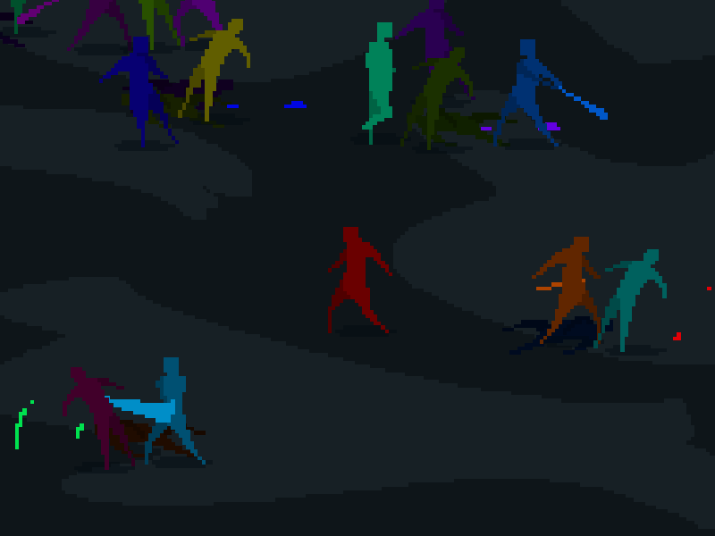
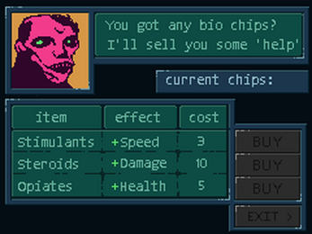
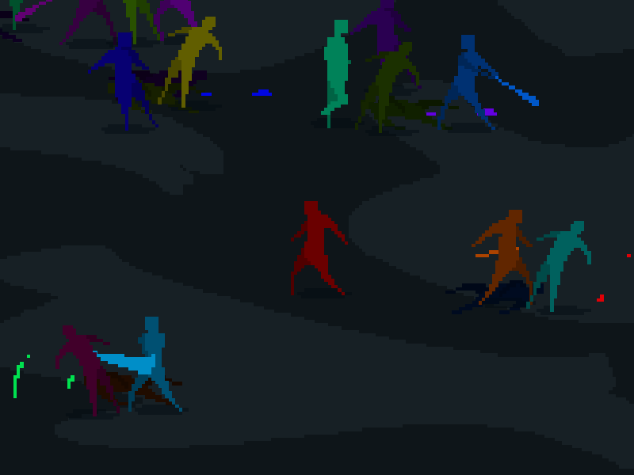
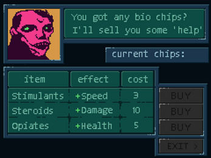

Games
I love the idea that someone can create something that affects people emotionally. Some special games, art and music have affected me like this. I spend my free time thinking about and making games in the hope that I can create something that will affect other people.
Ultra Violet Gladiator
 



About
For Ludum Dare 38, the theme was 'one room'. I created a single player arena fighter where the player runs around hitting enemies to survive. It was created and polished across 4 days.
Development
I chose to use the LibGdx framework as it handles the rendering, playing sounds, collision handling and input handling that I needed. It's very portable and produced a releasable build using Gradle with a few commands.
What worked
- bright colors
- smooth animations
- music and sound effects were good
- enemies chose targets poorly
- players could win by running away
- music was repetitive
- controls were too awkward